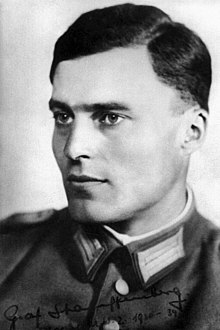

Claus von Stauffenberg was a German army officer who is best known for his failed attempt on 20 July 1944 to assassinate Adolf Hitler at the Wolf's Lair. Alongside Major Generals Henning von Tresckow and Hans Oster, Stauffenberg was a central figure in the conspiracy against Hitler within the Wehrmacht. Shortly following the failed Operation Valkyrie plot, he was executed by firing squad. As a military officer from a noble background, Stauffenberg took part in the Invasion of Poland, the 1941–42 invasion of the Soviet Union in Operation Barbarossa and the Tunisian campaign during the Second World War.
